- 17 خرداد 1390
نفیسه آزاد
- 9 خرداد 1390
یک هفته با زنان در خبر
حمیذه نظامی
- 8 خرداد 1390
- 8 خرداد 1390
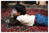
- 7 خرداد 1390
ترجمه: شهرزاد امین
- 29 فروردین 1390
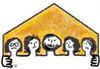
نویسنده: سواد همادا ترجمه: محبوبه حسین زاده
- 21 فروردین 1390
- 17 اسفند 1389
ترجمه : شهرزاد امین
- 16 اسفند 1389

- 24 بهمن 1389

گزارشی از وضعیت فعالان کمپین در چهارمین سال فعالیت
- 12 بهمن 1389
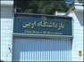
- 3 بهمن 1389
- 16 آذر 1389
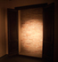
گزارشی از خشونت، مقاومت و روایت های زنان ایران و ایتالیا
- 9 آذر 1389
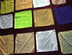
- 6 آذر 1389
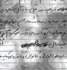
- 4 آذر 1389
- 24 شهریور 1389
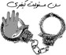
کودکانی که فردایشان را از دست می دهند / مژگان قاسمیان
- 9 شهریور 1389
- 2 اردیبهشت 1389
- 24 فروردین 1389
- 24 اسفند 1388
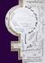
تجربه کمیته هنری کمپین در برخورد با مخاطب
- 22 اسفند 1388
گزارش کمپین پاریس از راهپيمايي روز جهاني زن در پاریس
- 17 اسفند 1388
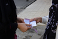
- 8 آذر 1388
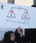
- 7 آذر 1388
- 6 آبان 1388
- 1 مهر 1388
- 24 اسفند 1387
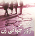
شبی با شاعران و نویسندگان در گرامیداشت روز جهانی زن
گزارش تصویری: آیدا سعادت و نسیم خسروی
- 18 اسفند 1387
گزارشی از پنجاه و سومین نشست کمیسیون مقام زن در سازمان ملل برای دوستان کمپینی ام/1
خدیجه مقدم
- 16 دی 1387
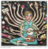
مادران پر نقش و بی حق
کارگروه حق سرپرستی برای زنان